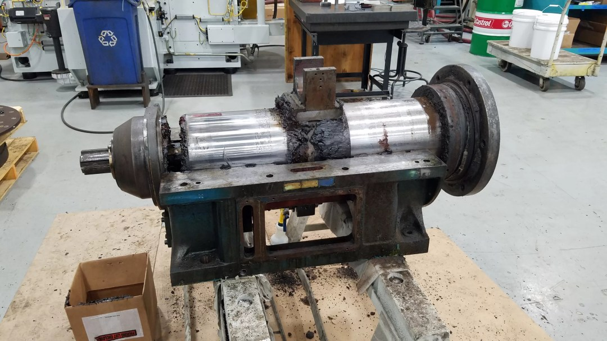
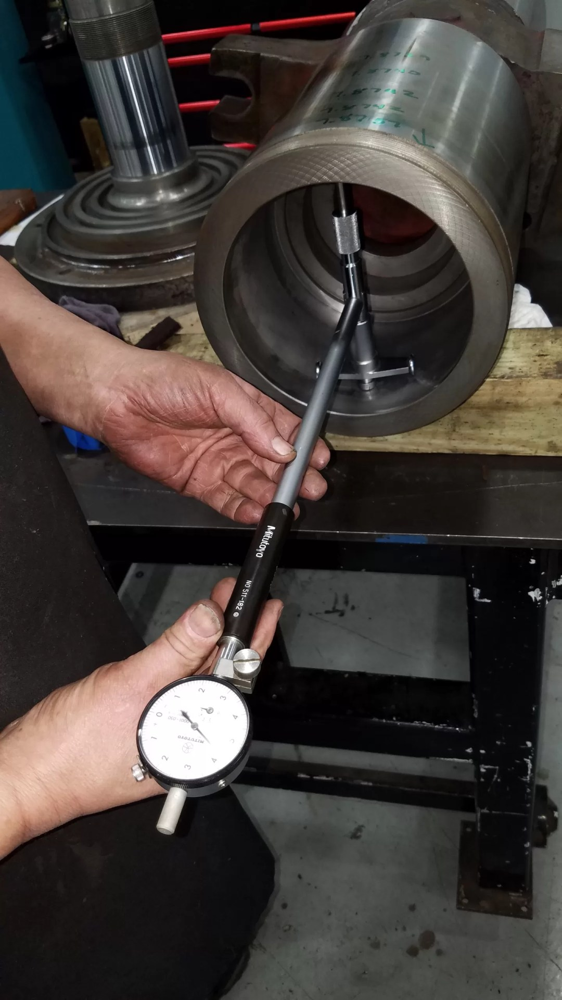
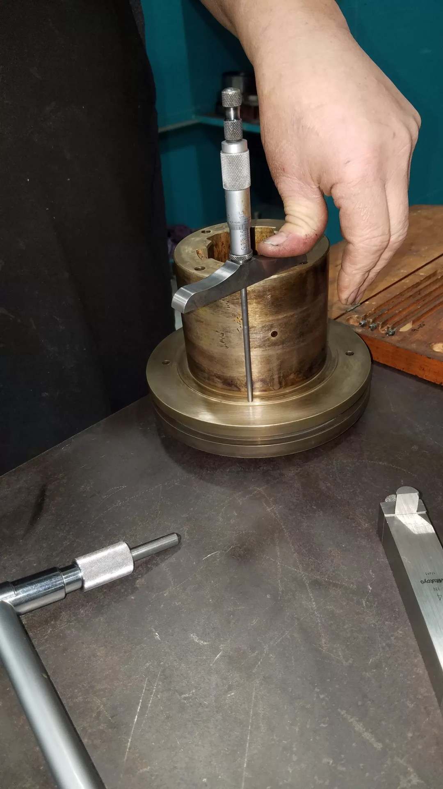

Machine service
Spindle rebuilds.
Besly, C&B, Gardner, Giustina and Mattison.

Assessment
Your observations help identify the problem. C&B can inspect at your facility when practical, or diagnose a spindle shipped to its workshop.
Teardown
Document and dismantle the assembly. Clean, identify and organize every component.

Inspection
Check dimensions against machine drawings and determine which components remain within tolerance.


Repair & replacement
Restore serviceable parts to OEM specifications. Replace unsuitable parts; machine or balance the spindle and quill as required. Inspect replacement components.
Reassembly
Assemble inspected parts in a clean environment, following OEM drawings and checking the specified spindle shake.
Balancing & testing
C&B’s in-house test stand checks temperature, sound and vibration. Repeat testing or balancing where needed.
Return & installation
Package the spindle for return. A C&B technician can assist with installation and alignment at your plant.